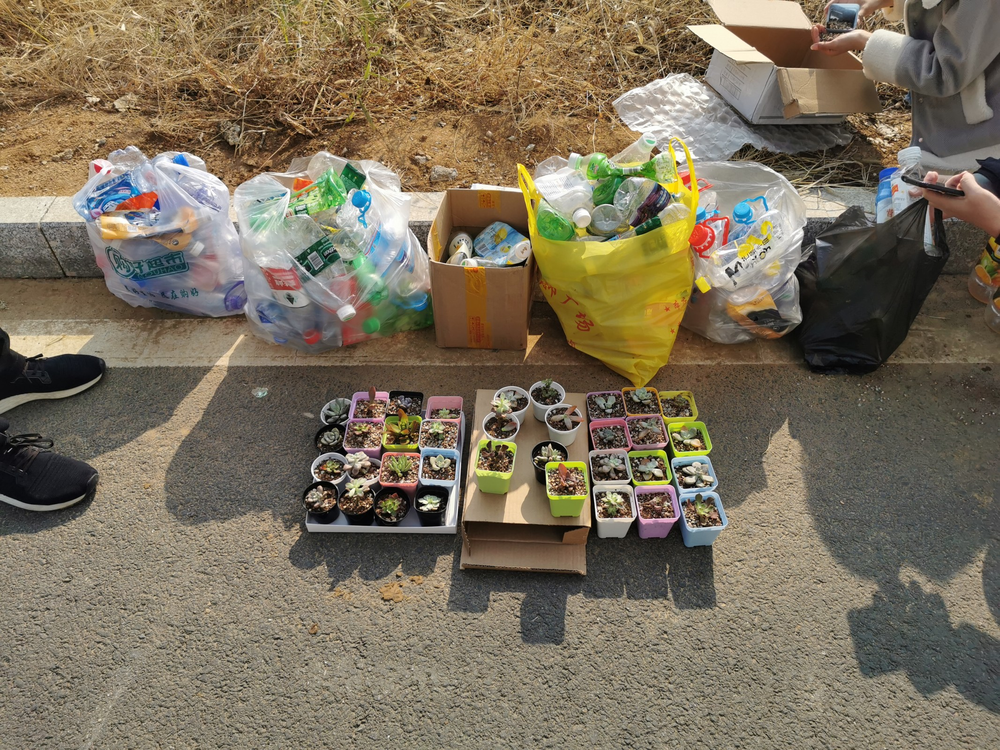

随着经济的迅速发展和生产力水平的不断提高，人类对环境的影响越来越大，环境保护问题已成为当代社会的重大问题。为了提高学生们的环保意识，加强学生们的环保理念，美化校园环境，将绿色作为我们生活的主旋律，绿源环保协会于 2021年 3月21日 、 22日中午在7栋宿舍楼下进行了绿色银行活动。

活动 开始 ，绿源环保协会成员们集合分配好相关任务后，有序地展开工作。此次环保活动主要以收集废 塑料瓶 子积分兑换明信片、盆栽等为主。活动期间，成员们积极地为 学生 们普及相关知识，回答相关问题。在学生们积极参与活动的热情氛围下，绿源环保协会的成员们很快收集了大量 塑料瓶 ，并将收集到的 塑料瓶 打包进预先准备好的袋子中，进行集中分类处理。最后，协会成员们清理了现场。

本次活动旨在号召大学生 的增强环保意识，在以后的学习、生活中更多地参与保护校园环境 。
责任编辑：团委